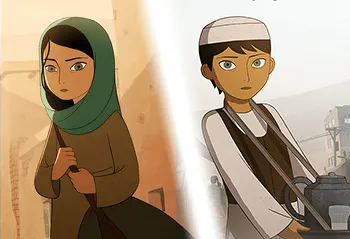

Nira
Summary:

Nira's life began as a merchant, working to sell bread at the market when her father fell ill. While working for the king, he and many others had been exposed to shards of Black Glass - a dangerous substance known to grant glimpses of vizier magic at the cost of sight and sanity. Nira was already nursing a hatred of those in power for endangering s many lives, so when she developed the same illness, her burning disgust crystallized into an idea: that the petty justifications of those who rule are merely cover for their own desire for power.
Nursing this hatred, Nira began to slip, seeing visions of Caliphran, the vizier of madness. He taunted her for endless weeks, speaking of how the grand truth of the world would shatter her mind. As she slipped in and out of lucidity, she would search desperately for ways to be free of him, ways to get back to her already meager life - but at every turn, she was refused help. A merchant girl from some small bazaar stand didn't merit much attention, even as her sanity dwindled. She grew more and more desperate, sicker and sicker - until one day, Caliphran whispered the truth:
"Everything you have can be taken away."
And Nira - well, she laughed.
"Ah, yes. The lesson every child learns when their mother plays peek-a-boo with them. Is that all you have, Caliphran?"
Nira became a vizier that day - and Caliphran has feared her ever since.
Nira is an unusual vizier. Where most viziers have a grand view of how the world works, Nira's can simply be summarized as "not that." She takes a dismissive attitude to all of their theories, regarding them as the delusions of tyrants who want to rationalize their pursuit of power. In turn, she seeks to either kill or pacify the other viziers, ridding the world of the fear they cause. Of course, this is a nearly impossible task - but only nearly; the vizier Olcaneth has already fallen by her hand. She plans to target Caliphran next - but really, she'd be satisfied taking out any of the bastards.
Powers:
- Nira's cynicism allows her followers to view other viziers' magic as tools rather than objects of great importance.
- As such, they can use these magics without ill effect, even if it isn't as powerful.
- She also is somewhat associated with ink-based magic, allowing written incantions and rune magic.
Weaknesses:
- Nira doesn't demand much worship, or consolidate much political power, and as such, doesn't have too much influence in the world.
- Her lack of overt power makes her followers weak in a straight-up fight.
Followers:
- Nira's magic tends to work best in those who question or rebel, allowing them to break chains and disable magic.
- Though Kren'nir do exist, with ink-black skin and horns, there aren't many of them, as Nira's influence is limited.
Misconceptions:
- Though she is the vizier of cynicism, she doesn't believe in nothing - she's just deeply skeptical of most beliefs.
- She's not a nihilist, either. She believes the world can get better, and makes frequent attempts at helping it do so.
- She doesn't believe that might makes right or that since nothing matters, you can do whatever you want - that's closer to Azagath or Saria, if anyone.